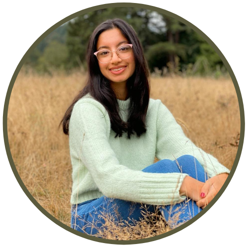

About Me
I am a sophomore at the University of Washington where I study human centered design and engineering - HCDE at UW. I am passionate about user-centered engineering with a focus on inclusive and accessible design.
I am a sophomore at the University of Washington where I study human centered design and engineering - HCDE at UW. I am passionate about user-centered engineering with a focus on inclusive and accessible design.